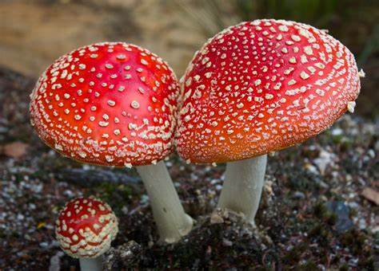

Fungi Definition. Fungi (singular: fungus) are a kingdom of usually multicellular eukaryotic organisms that are heterotrophs (cannot make their own food) and have important roles in nutrient cycling in an ecosystem. Fungi reproduce both sexually and asexually, and they also have symbiotic associations with plants and bacteria.

Fungi can be found everywhere, i.e., they are cosmopolitan
Fungi are mostly terrestrial, but few are aquatic also.
Fungi mostly grow in warm and humid places like wood, the bark of trees, dung, etc.
Depending on the mode of nutrition, fungi can be saprophytic or parasitic.
a. Saprophytic fungi grow on dead and decaying organic matter (plants and animals). Ganoderma, Polyporus are wood-rotting fungi.
b. Parasitic fungi live inside or on the body of the host organism (plant or animal). Albugo, Phytophthora are parasitic fungi.
c. Coprophagous fungi feed on animal excreta. Peziza is an example of a coprophagous fungus.
The vegetative phase of a fungus is called thallus, which is not differentiated into distinct roots, stems, and leaves.
The thallus may be unicellular, like in Saccharomyces cerevisiae or Yeast or filamentous as in most fungi.